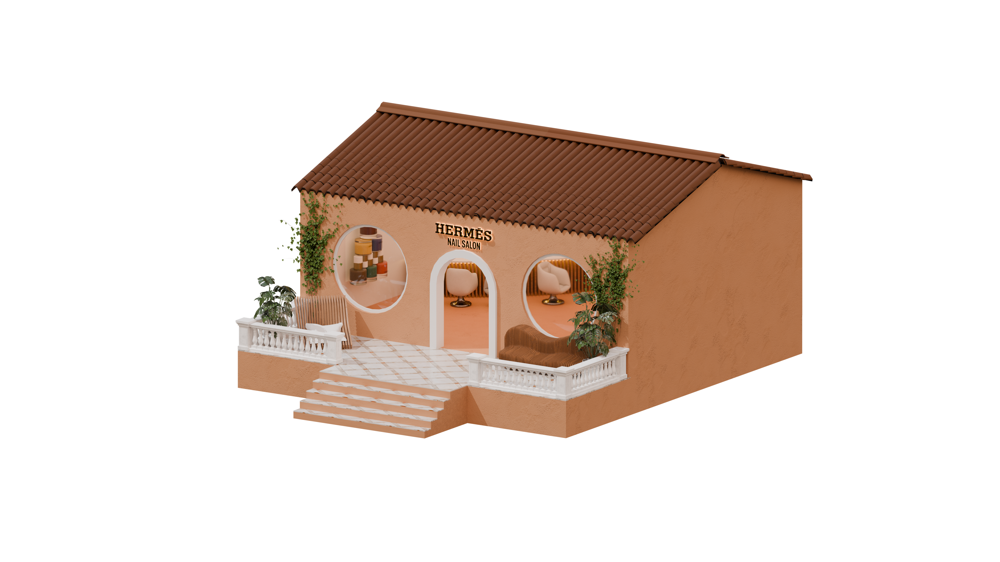
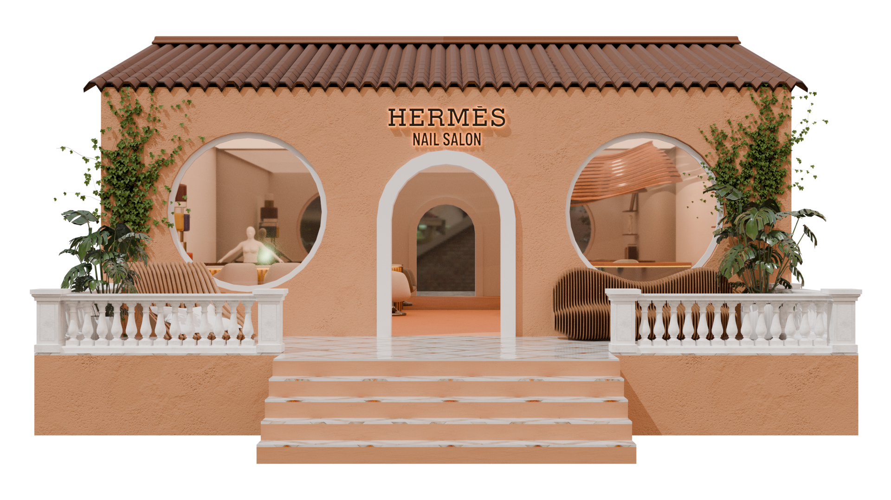
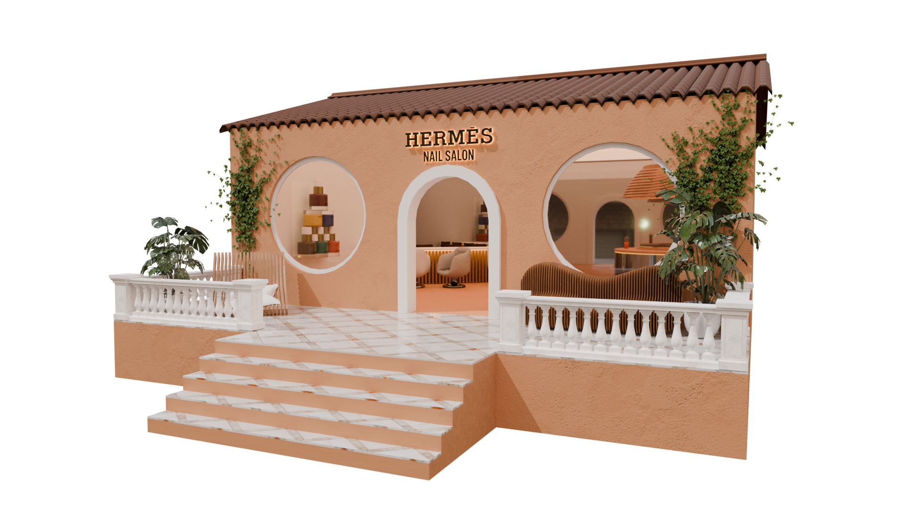
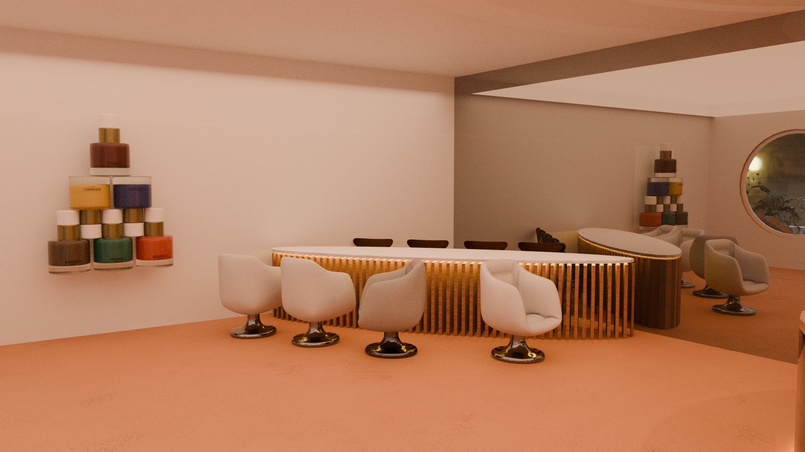
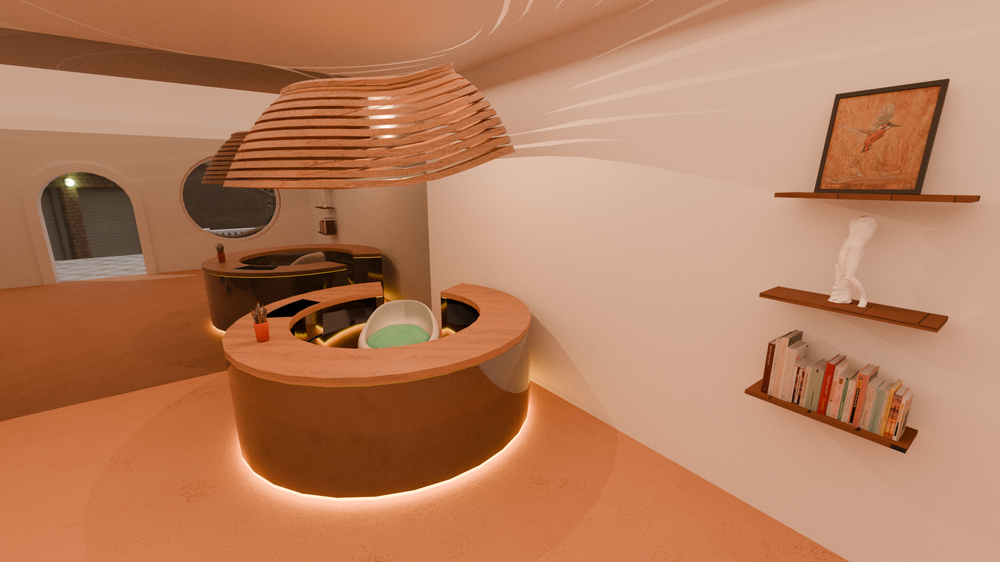
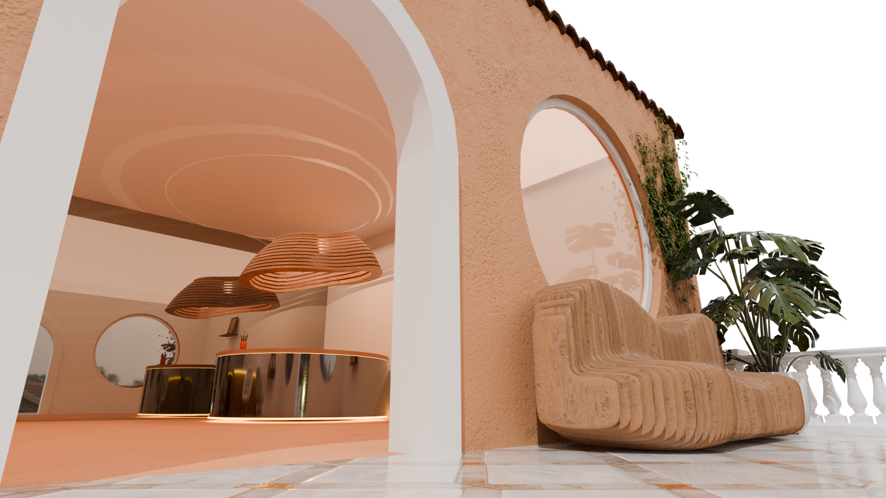
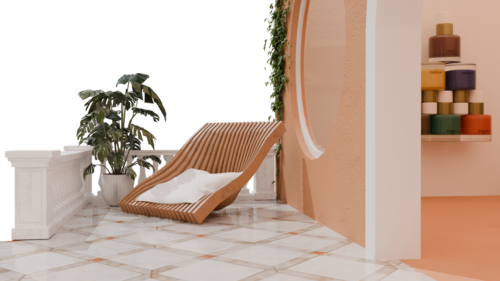
Diseño integral de un espacio efímero para lanzar la línea de esmaltes Hermès y transformar un gesto cotidiano en experiencia de lujo.
Hermès siempre ha sido sinónimo de exclusividad y tradición artesanal, con universos centrados en la moda y los complementos. La oportunidad está en abrir nuevas categorías de producto —como el esmalte de uñas— y presentarlas en un formato inesperado: un nail salon temporal.
El proyecto consiste en un espacio veraniego en Italia, rodeado de tiendas de lujo, diseñado bajo la estética y filosofía de Hermès. Cada mueble, cada textura y cada detalle del interiorismo ha sido creado ex profeso, desde la mesa circular destinada a nail art en vivo con estampados icónicos de la maison, hasta la disposición del espacio pensada para invitar a detenerse, compartir y participar.
Esta activación responde a tres objetivos estratégicos: dar visibilidad a una categoría nueva y menos conocida dentro del portfolio; acercar la marca a públicos que la perciben como inalcanzable, generando cercanía y simpatía; y capitalizar la teoría del “lipstick effect”: en épocas de recesión, los pequeños lujos como un esmalte de uñas se convierten en motores de deseo accesible.
Un espacio que refuerza el posicionamiento de Hermès como casa innovadora y atemporal, capaz de transformar incluso lo cotidiano en un ritual de lujo, y de conectar con el consumidor desde lo experiencial, lo aspiracional y lo emocional.
Mahou siempre ha sido un símbolo de identidad madrileña, una cerveza que forma parte del día a día, las tradiciones y la cultura de la ciudad. Con ese punto de partida, decidí reinterpretar uno de los iconos más reconocibles de Madrid: sus Cuatro Torres.
El proyecto consiste en un vídeo 3D realizado en Blender, en el que las torres se reconstruyen a partir de un material inesperado: chapas de botellín de Mahou apiladas cuidadosamente hasta levantar el skyline. El resultado es un ejercicio visual con estética ASMR, donde el ritmo, la textura y el sonido se convierten en parte de la experiencia sensorial.
El concepto se cierra con un claim sencillo y poderoso: “Mahou, el sabor que construye Madrid”, reforzando la conexión emocional entre la cerveza y la ciudad que la vio nacer.
Más allá de mostrar producto, esta pieza se enmarca en una tendencia actual donde las marcas construyen contenido cultural y aspiracional para reforzar su identidad. Igual que Hermès apuesta por animaciones artísticas o Ralph Lauren utiliza a su oso como embajador narrativo, Mahou abre un nuevo territorio creativo: generar piezas disruptivas que no buscan vender directamente, sino transmitir de manera subliminal su personalidad, su vínculo con Madrid y su rol como símbolo cultural.
Una manera de entender la comunicación de marca no como publicidad de producto, sino como construcción de imaginario colectivo.
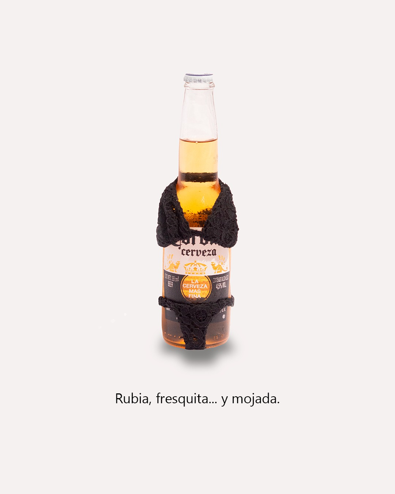
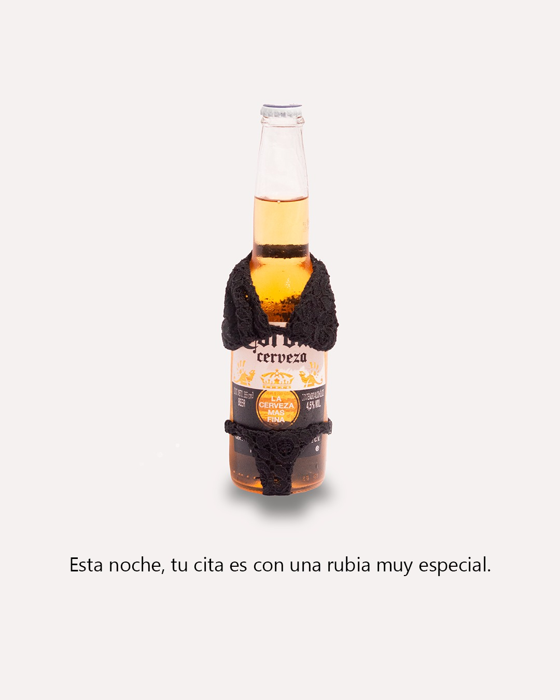
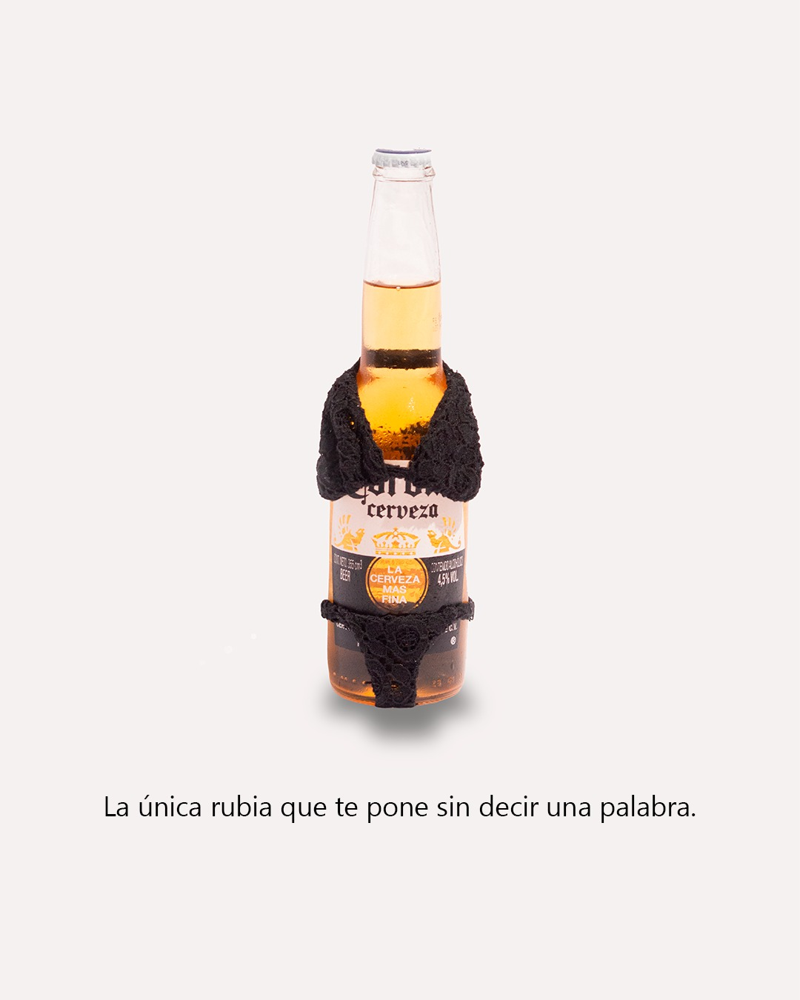
En este proyecto decidí llevar el universo de Corona a un terreno más atrevido y con un toque de humor editorial.
Creé un bikini a medida para un botellín de Corona, transformando la botella en un icono visual inesperado y divertido. Hice una sesión de fotos con estética limpia y editorial, que terminé de pulir en Photoshop.
El concepto se completa con cuatro titulares de tono irónico y descarado, jugando con el doble sentido y el humor cuñado.
La intención era explorar un tipo de comunicación que se aleja de lo políticamente correcto para abrazar lo atrevido, sarcástico y viral, alineándose con la tendencia actual de marcas que buscan provocar conversación en redes.
El resultado es un ejercicio creativo que fusiona moda, humor y branding en una pieza visual tan refrescante como la propia cerveza.
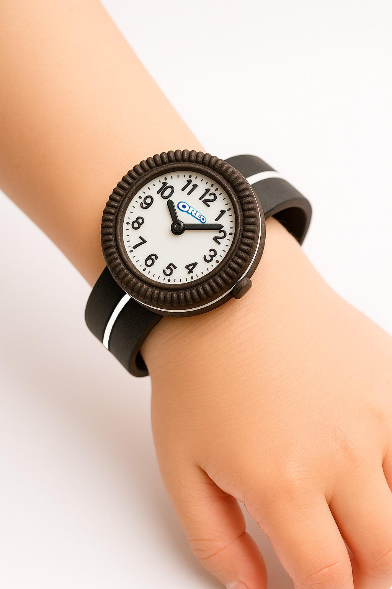
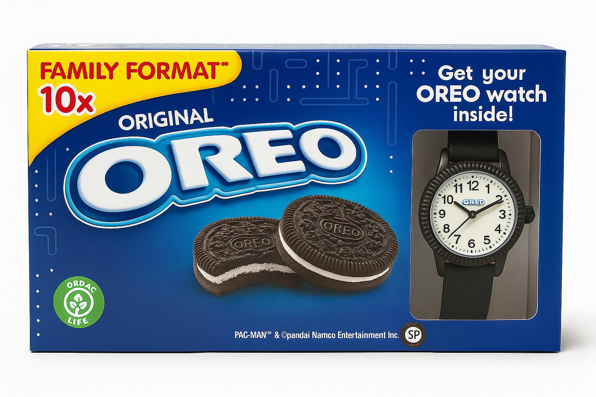
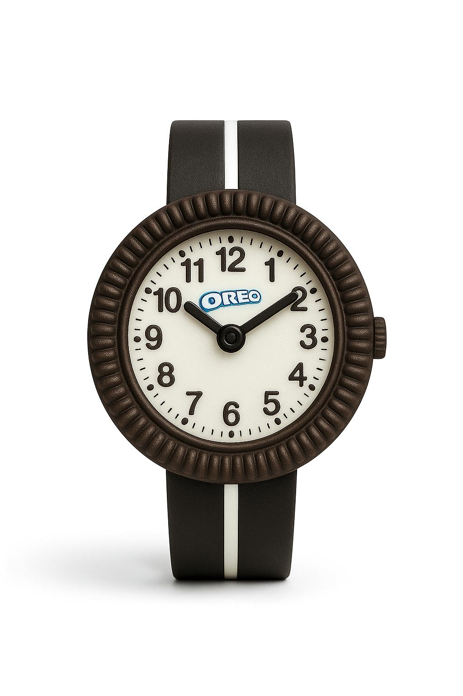
Activación de producto para transformar el momento de la merienda en un ritual familiar.
Siempre he visto cómo ciertos objetos que venían con productos del supermercado acababan quedándose en casa durante años. Desde las cucharas de Colacao, las cajas duras de Marcilla o los juguetes de Kinder, hasta los premios del Happy Meal que aún hoy se coleccionan o se pasan entre hermanos.
Me di cuenta de que esos objetos no solo aportaban valor inmediato, sino que creaban recuerdo. Es por eso, que diseñé un objeto Oreo: un reloj funcional y coleccionable que convierte “la hora de merendar” en la hora de Oreo.
Un gesto cotidiano que vincula emocionalmente a la marca con las rutinas familiares, y transforma un simple consumo en hábito. Una activación que mejora retención y fidelización, aumenta la frecuencia de compra, potencia la visibilidad orgánica y deja huella en el consumidor.
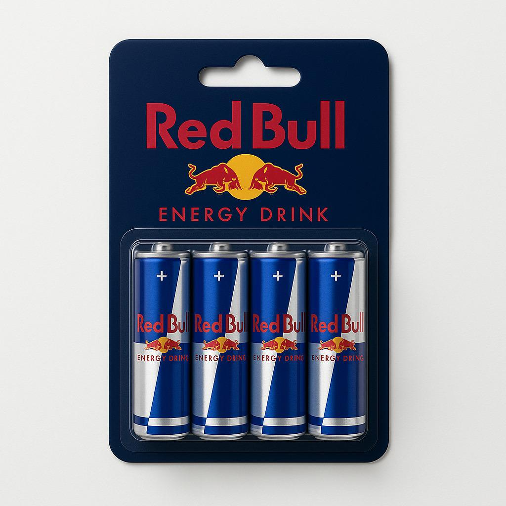
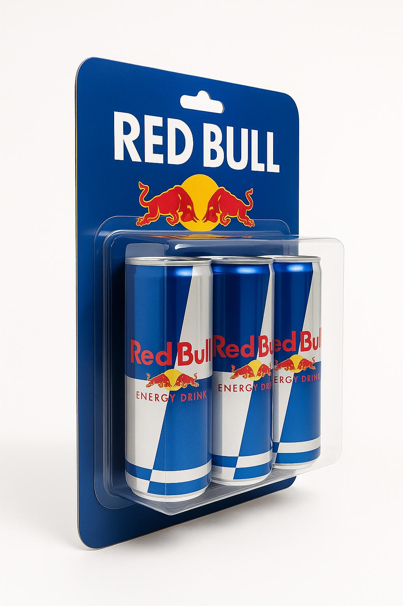
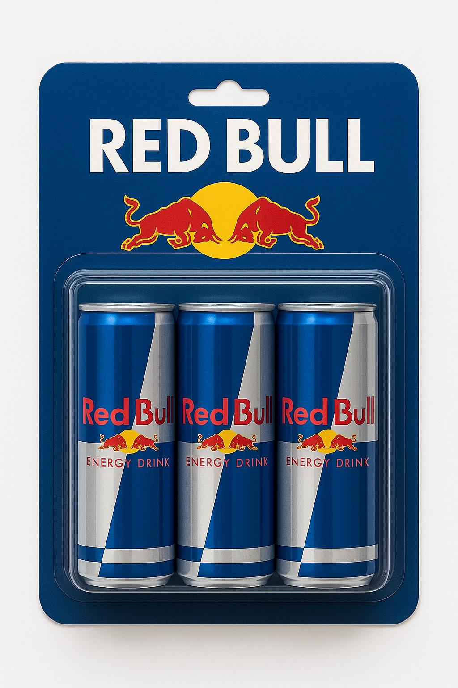
Red Bull es sinónimo de energía, dinamismo y funcionalidad, con formatos tradicionales en latas individuales y packs estándar. La oportunidad está en innovar el formato para impactar en el punto de venta y potenciar la compra impulsiva.
La propuesta consiste en un blister pack con tres latas, diseñado para reforzar el concepto de “energía lista para usar” y optimizado para ubicarse en zonas estratégicas de supermercados, como las zonas “last minute” junto a las cajas registradoras.
Este formato reduce la barrera psicológica de compra frente a formatos más grandes, facilitando la decisión y aumentando la conversión. Su diseño atractivo también genera impacto visual en redes sociales, promoviendo la visibilidad orgánica y conectando con públicos urbanos y jóvenes.
Esta estrategia une innovación en packaging y estrategia en puntos de venta, aumenta la visibilidad y refuerza la posición de Red Bull como líder en bebidas energéticas.